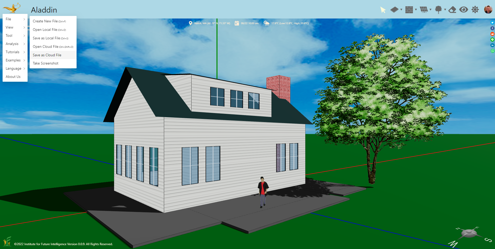
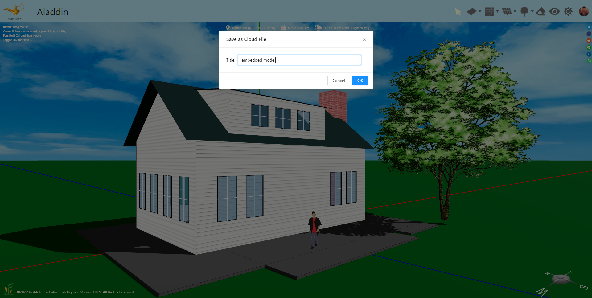
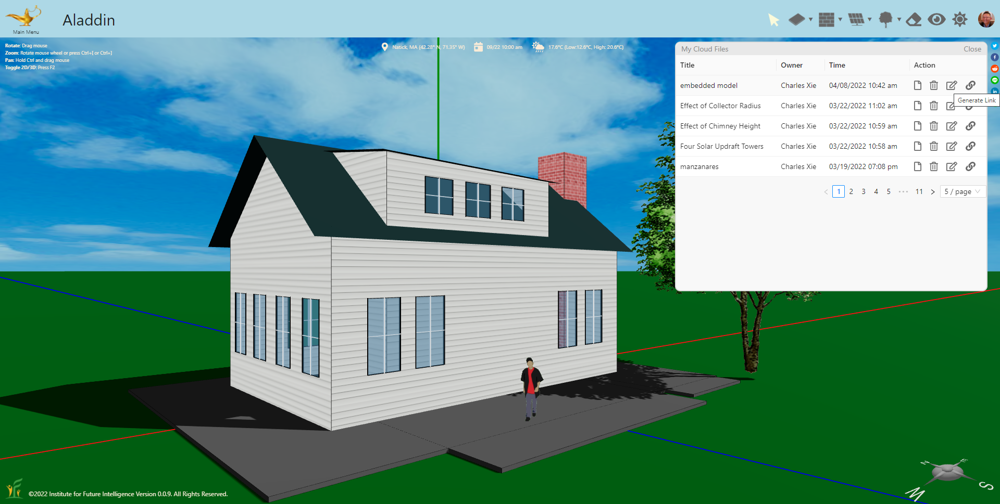
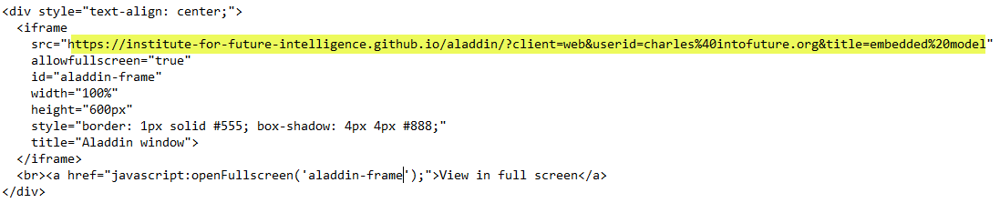

Embedding Aladdin Windows in a Web Page
Saving Aladdin models to the cloud and embedding interactive 3D windows on your own web pages.
One of the useful features of Aladdin is that you can embed one or more live 3D models in a Web page to make an interactive exhibit of your work. In this article, I will walk you through the steps needed to make this happen.
The Steps to Embed an Aladdin Model
Suppose you have designed a simple house and you want to feature it on your own website. Your first step is to save it on the cloud within Aladdin using the Save File to Cloud tool under the File Menu of the Main Menu, which can be opened by clicking the magic lamp icon in the upper-left corner, shown as follows (to be able to do that, you have to log into Aladdin first so that Aladding can create a cloud account for you).

You can give it a title when prompted:

Once you give it a name and save it to your cloud account, you can find it by using My Cloud Files tool in the cloud menu. The tool opens up a window that shows a list of your cloud files. Among other things, you can create a link to any of them using the Link button:

The link is copied to the clipboard and ready to be pasted. The next step is to create an iframe component for your Web page. Unfortunately, we cannot directly show the HTML code on this page as it will always display the actual model instead of the code. So we show an image of the code here. You can view the source of this page to copy and paste the HTML code. Once you have copied the code, you can just replace the highlighted line with the link to your own file.

Once you insert the iframe into your Web page, your Aladdin design will show up in the browser as an interactive model, just like the example below.
Easy peasy! There are a few other things that you may want to know.
If you want your model to be for view only, you can add "viewonly=true" to the link:
https://institute-for-future-intelligence.github.io/aladdin/?client=web&viewonly=true&userid=charles%40intofuture.org&title=embedded%20model
If you want to provide your users a full-screen view, you can also add some more code. Make sure that you copy the following JavaScript code in the head section of the source of this page, which must be enclosed between <script> and </script> in the head section of your own page to support the full-screen view.
function openFullscreen(id) {
var elem = document.getElementById(id);
if (elem.requestFullscreen) {
elem.requestFullscreen();
} else if (elem.webkitRequestFullscreen) { /* Safari */
elem.webkitRequestFullscreen();
} else if (elem.msRequestFullscreen) { /* IE11 */
elem.msRequestFullscreen();
}
}
If you have modified your design, just use Update This Cloud File provided in the cloud menu of Aladdin, or press Ctrl+Shift+S, to update it on the cloud. Your page will always have the latest model when it is reloaded.
Embedding Multiple Aladdin Models
You can embed more than one Aladdin models on a single Web page. The following example shows two Aladdin windows embedded side by side. Each of them can be viewed in the fullscreen mode as well.
View window 1 in full screen | View window 2 in full screen
← Back to Aladdin